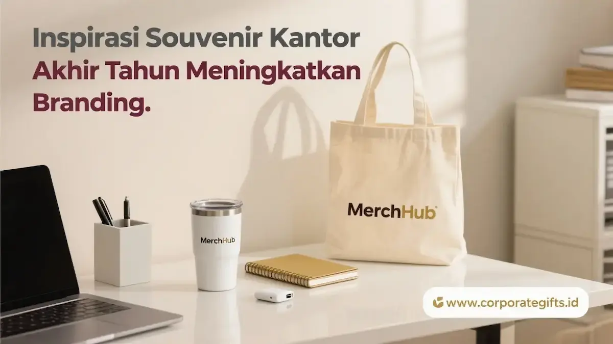

Corporate Gifts ID - Souvenir kantor akhir tahun terbaik untuk menyambut 2026 adalah produk fungsional bernilai guna tinggi seperti tumbler custom double wall, executive gift box, dan agenda kulit sintetis. Kombinasi fungsi harian dan desain branding yang elegan inilah yang membuat identitas perusahaan terus terlihat dan melekat di benak karyawan, klien, serta mitra bisnis sepanjang tahun.
Pemilihan cinderamata sebaiknya disesuaikan secara proporsional dengan karakteristik penerima, baik staf operasional internal, pelanggan prioritas, maupun rekanan strategis. Pendekatan terarah ini menjamin pesan apresiasi tersampaikan tepat sasaran dan meninggalkan kesan yang membekas. Anda juga dapat menyimak panduan kurasi souvenir VIP perusahaan untuk mendapatkan inspirasi bingkisan tingkat eksekutif.
Corporate Gifts ID menyediakan seluruh kategori suvenir kantor akhir tahun dalam satu katalog terpadu, lengkap dengan layanan kustomisasi logo presisi dan opsi kemasan boks eksklusif untuk kebutuhan korporat skala kecil maupun pengadaan tender massal.
Kenapa Souvenir Akhir Tahun Penting untuk Branding Perusahaan?
Momen pergantian tahun membawa dinamika emosional tersendiri. Pemberian cinderamata akhir tahun berfungsi sebagai jembatan komunikasi emosional yang memperkuat hubungan institusi dengan para pemangku kepentingan sekaligus bertindak sebagai sarana promosi organik yang bekerja tanpa henti.
Setiap item suvenir yang dibawa pulang menjadi representasi visual dari nilai dan profesionalisme perusahaan Anda:
- Meningkatkan Loyalitas Kemitraan: Memberikan sinyal apresiasi tulus atas kontribusi kerja sama selama satu tahun fiskal penuh.
- Memperluas Eksposur Merek: Produk yang digunakan setiap hari di meja kerja atau saat bepergian secara konsisten memperkenalkan logo Anda ke lingkaran sosial baru.
- Menegaskan Reputasi Profesional: Suvenir berkualitas tinggi mencerminkan komitmen manajemen terhadap standar keunggulan tanpa kompromi.
- Membangun Retensi Hubungan B2B: Hadiah akhir tahun yang dipersonalisasi mencegah perpindahan klien ke kompetitor di awal tahun baru.
4 Kategori Souvenir Kantor Akhir Tahun yang Relevan di 2026
Agar selaras dengan kebutuhan modern, pengadaan suvenir kantor akhir tahun dapat diklasifikasikan ke dalam empat pilar utama:
1. Souvenir Fungsional untuk Aktivitas Harian
Produk souvenir fungsional memberikan frekuensi penggunaan tinggi sehingga biaya per impresi (cost-per-impression) promosi menjadi sangat rendah:
- Tumbler Stainless Steel Custom Logo: Pilihan suvenir terpopuler karena dipakai di meja kantor dan saat komuter. Dinding ganda vacuum menjaga suhu minuman tetap dingin atau hangat seharian.
- Agenda dan Notebook Kulit PU: Menghadirkan tekstur mewah dan mendukung kedisiplinan kerja untuk menyusun target rencana kerja tahun baru 2026.
- Pulpen Metal Laser Engraved: Perlengkapan klasik yang elegan dengan ukiran nama penerima untuk menandatangani dokumen penting.
- USB Flashdisk Custom: Media penyimpanan digital ringkas berbentuk kartu atau balok logam berlapis logo korporasi.

Kombinasi suvenir akhir tahun berkonsep gift set: tumbler vacuum, wireless charger, dan kalender meja 2026.
2. Souvenir Bertema Pergantian Tahun Baru 2026
Mengintegrasikan unsur kalender kalender kerja baru menghadirkan fungsi praktis yang relevan sepanjang tahun:
- Mug Keramik Tema New Year 2026: Media minum santai di pantry kantor dengan sematan pesan motivasi dan identitas brand.
- Kalender Meja dan Planner 2026: Menjadi pajangan permanen di atas meja kerja klien yang dilihat ratusan kali sepanjang hari kerja.
3. Gift Set Premium untuk Klien dan Mitra Strategis
Untuk jajaran pimpinan dan rekanan kelas atas, bingkisan terpadu dalam satu wadah elegan menjadi pilihan utama:
- Corporate Gift Box Kayu atau Hardbox: Paket paduan tumbler, notebook kulit, dan pena eksklusif dalam kotak rigid berpita satin.
- Gadget Nirkabel Modern: Wireless charging desk pad atau power bank ultra-slim yang mencerminkan inovasi teknologi modern.
- Apparel Korporat Berkualitas: Jaket bomber tahan angin atau polo shirt katun pique dengan bordir komputer presisi tinggi.
4. Souvenir Berorientasi Keberlanjutan (Eco Corporate Gift)
Mengadopsi nilai green corporate dengan souvenir kantor ramah lingkungan untuk membuktikan tanggung jawab lingkungan:
- Totebag Kanvas Katun Organik: Tas serbaguna tahan lama yang menggantikan kantong plastik belanja sekali pakai.
- Set Perlengkapan Meja Berbahan Serat Bambu: Desk organizer dan kalkulator bertenaga surya berbahan kayu alami.
Rekomendasi Souvenir untuk Setiap Jenis Penerima
Tabel berikut memetakan keterkaitan antara profil sasaran penerima dengan strategi pemilihan cinderamata akhir tahun:
| Kategori Penerima | Tujuan Utama Komunikasi | Rekomendasi Souvenir |
|---|---|---|
| Karyawan Internal Perusahaan | Apresiasi kinerja tahunan dan motivasi target baru | Polo shirt bordir, planner agenda 2026, tumbler custom |
| Klien & Pelanggan Prioritas VIP | Menjaga retensi kemitraan dan hubungan profesional B2B | Executive gift box hardbox, wireless power bank, set pen metal |
| Mitra Bisnis & Vendor Rekanan | Memperkokoh kolaborasi sinergi jangka panjang | Mug keramik elegan, jaket korporat, tote bag kanvas tebal |
| Publik & Peserta Acara Akhir Tahun | Meningkatkan brand awareness dan citra positif merek | Pulpen metal engraved, notebook saku kraft, reusable shopping bag |
Faktor Penentu yang Membuat Souvenir Terlihat Premium
Persepsi kemewahan sebuah suvenir tidak ditentukan semata-mata oleh nominal anggaran, melainkan oleh keharmonisan tiga pilar utama:
- Konsistensi Identitas Desain: Penempatan logo dengan proporsi ideal, ketepatan palet warna brand, dan tipografi resmi perusahaan.
- Kualitas Sentuhan Material (Tactile Experience): Bobot produk yang kokoh, kelembutan lapisan karet (soft-touch coating), atau serat kulit yang bertekstur mantap saat digenggam.
- Kemasan dan Unboxing Eksklusif: Penggunaan rigid hardbox atau wooden box berpita menghadirkan rasa penasaran dan kepuasan emosional saat dibuka.
- Sentuhan Kartu Personalisasi: Kartu ucapan terima kasih dengan tanda tangan basah dewan direksi menjadi elemen emosional tak ternilai.
Strategi Perusahaan Besar Memanfaatkan Momentum Akhir Tahun
Lembaga perbankan nasional seperti pada inisiatif merchandise eksklusif sektor perbankan dan korporasi telekomunikasi terkemuka secara rutin mengalokasikan anggaran suvenir akhir tahun sebagai agenda tetap relationship marketing. Pola yang terbukti efektif adalah pemberian planner eksklusif untuk internal, gift box teknologi untuk mitra utama, serta cinderamata ramah lingkungan untuk publik.
Pertanyaan Seputar Souvenir Kantor Akhir Tahun (FAQ)
Kesimpulan
Souvenir kantor akhir tahun bukan sekadar tradisi belanja seremonial, melainkan investasi strategis dalam membangun reputasi brand yang berkesinambungan. Dengan memilih produk yang fungsional, personal, dan selaras dengan identitas korporat, perusahaan Anda mengawali tahun baru dengan ikatan kemitraan yang semakin solid.
Siapkan souvenir akhir tahun perusahaan Anda lebih awal bersama Corporate Gifts ID. Jelajahi katalog lengkap kami atau ajukan konsultasi bersama tim spesialis kami untuk mendapatkan penawaran harga terbaik dan sampel mockup digital cuma-cuma.